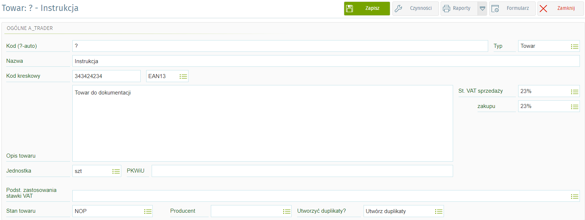

Dokumentacja tworzenia duplikatów towarów
Wstęp:
Mechanizm ten pozwala użytkownikowi na tworzenie duplikatów towarów dla każdego stanu (NSB,REP itp.)
Etap tworzenia:
Użytkownik podczas tworzenia nowej kartoteki towaru musi wskazać jeden ze wcześniej zdefiniowanych stanów w polu "Stan towaru". Następnie jeśli chcemy utworzyć duplikaty w polu "Utworzyć duplikaty?" wybieramy wartość "Utwórz duplikaty". Po zapisaniu tak uzupełnionej kartoteki towaru mechanizm automatycznie utworzy takie same kartoteki dla pozostałych stanów i wyśle wszystko do MongoDB.

W przypadku gdy chcemy utworzyć kartotekę towaru tylko dla jednego stanu wybieramy interesujący nas stan w polu "Stan towaru" oraz w polu "Utworzyć duplikaty?" wybieramy wartość "Nie twórz duplikatów". Spowoduje to utworzenie tylko jednej kartoteki towaru dla stanu który wybraliśmy.